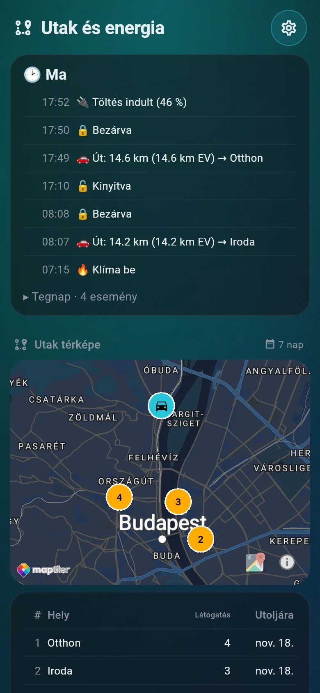
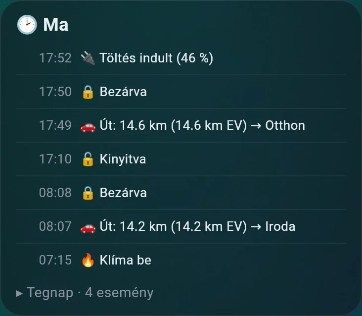
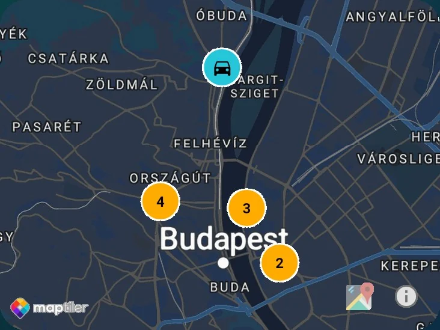
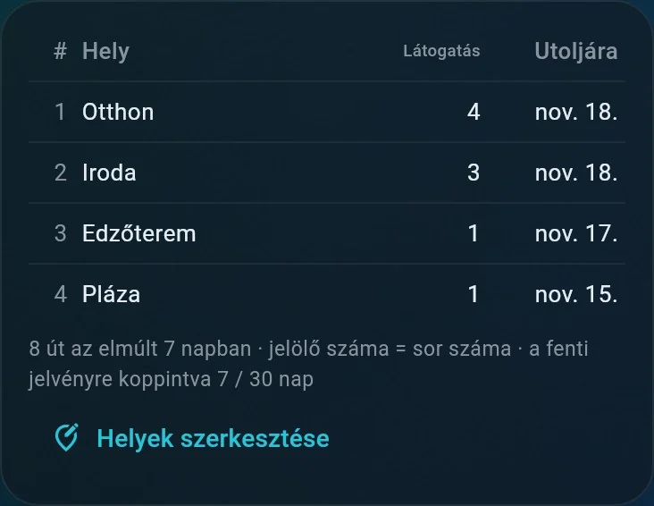
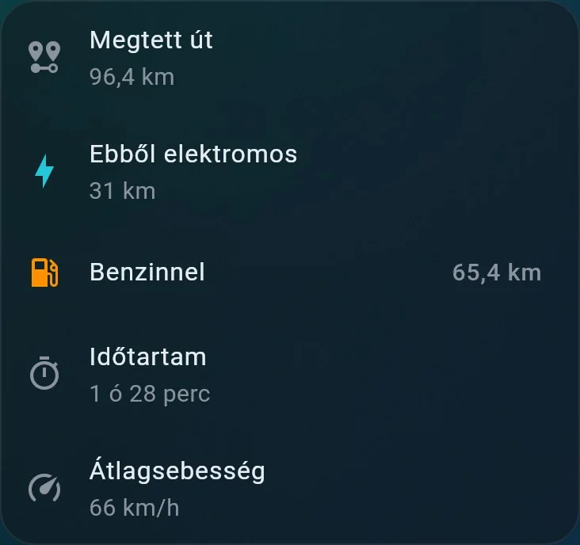

Utak és útvonalak
Minden út, automatikusan naplózva.
Nincs indítógomb, nincs kitöltendő menetlevél. A Carmeo észreveszi az utakat, és megőrzi a távot, az elektromos arányt és a költséget.


A napod idővonalon.
A mai utak egy pillantásra – és a nap idővonala a többivel: töltések, zárás és nyitás, a klíma bekapcsolása, abban a sorrendben, ahogy történtek.


Merre jártál.
Az utak térképe az elmúlt 7 vagy 30 nap helyeit mutatja, aszerint számozva, hogy hányszor jártál ott. Nevezd el a gyakori helyeidet, és mindenhol név szerint jelennek meg.


Minden út részletesen.
Táv, idő és átlagsebesség, mennyi ment árammal és mennyi benzinnel, az elfogyasztott energia és üzemanyag – és hogy a saját áraiddal mennyibe került az út. Az utak mellett a legközelebbi település neve – a Carmeo saját szerverén, külső szolgáltatás nélkül.
A helyrögzítés bármikor szüneteltethető. Az utak ilyenkor helyek nélkül rögzülnek.
Próbáld ki a saját autódon.
A Carmeo ingyenes. Csatlakozz a nyílt tesztcsoporthoz iPhone-on vagy Androidon.